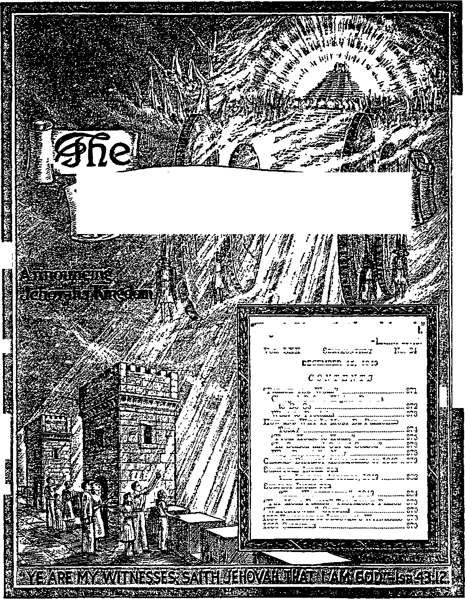

$
i-
VOL. T.X X
DECEMBER 15, 1949
371
382
384
“Yet more Praise” Testimony Period 370
“Watchtower” Studies
370
1950 Yearbook or Jehovah's Witnesses 370
1950 Calendar
370
372
..373
374
375
376
378
German District Assemblies of 1949 .. 379
Scripture Index fob
the Leading Articles, 1949
Subject Index for
No. 24
Semimonthly
CONTENTS
“Preach the Word”
What to Proclaim
How and Why It Must Be Pbeaohed
Today
"From. House to House”
"In Season and Out of Season”
Ezekiel 35:15.
Charged Before Higher Powers
to Do So
Why Especially Now
“The Watchtower”, 1949
Published Semimonthly By
WATCH TOWER BIBLE & TRACT SOCIETY 117 Adams Street « - Brooklyn 1, N.Y., U.S A.
Officers
N. H. Knobb, President Grant Sutter, Secretary
“And all thy children shall be taught of Jehovah; and great shall be the peace of thy children.” - Isaiah 54:13.
THE BIBLE CLEARLY TEACHES
THAT JEHOVAH Is the only true God, from everlasting to everlasting, and Is the Maker of heaven and earth and Giver of life to his creatures; that the Word or Logos was the beginning of his creation and his active agent in creating all other things; and that a cherub son of God rebelled against Jehovah and raised the Issue of His universal sovereignty;
THAT GOD created the earth for man, made perfect man for the earth and placed him upon it; that man yielded to the unfaithful cherub, or Satan, and willfully disobeyed God’s law and was sentenced to death; that by reason of Adam’s wrong act all men are born sinners and without the right to life;
THAT THE LOGOS was made human as the man Jesus and suffered death in order to produce the ransom or redemptive price for obedient men; that God raised up Christ Jesus divine and exalted him to heaven above every other creature and clothed him with all power and authority as head of God’s new capital organization;
THAT GOD’S CAPITAL ORGANIZATION Is a Theocracy called Zion, and that Christ Jesus is the Chief Officer thereof and is the rightful King of the new world; that the faithful anointed followers of Christ Jesus are Zion’s children, members of Jehovah’s organization, and are His witnesses whose duty and privilege it is to testify to Jehovah’s supremacy and declare his purposes toward mankind as expressed In the Bible;
THAT THE OLD WORLD of Satan began its “time of the end” A.D. 1914, and Christ Jesus has been placed by Jehovah upon the throne, has ousted Satan from heaven, and now proceeds to vindicate His name and establish the “new earth";
THAT THE RELIEF and blessings of the peoples can come only by Jehovah’s kingdom under Christ, which has begun; that His next great act is to destroy Satan’s organization and establish righteousness completely in the earth; and that under the Kingdom the people of good-will surviving Armageddon will carry out the divine mandate to “fill the earth” with righteous offspring, and that the human dead in the graves will be raised to opportunities of life on earth.
ITS MISSION
THIS journal la published for the purpose of enabling the people to know Jehovah God and his purposes as expressed in the Bible. It publishes Bible instruction specifically designed to aid Jehovah’s witnesses and all people of good-will. It arranges systematic Bible study for its readers and the Society supplies other literature to aid in such studies. It publishes suitable material for radio broadcasting and for other means of public instruction in the Scriptures.
It adheres strictly to the Bible as authority for Its utterances. It is entirely free and separate from all religion, parties, sects or other worldly organizations. It 1b wholly and without reservation for the kingdom of Jehovah God under Christ his beloved King. It is not dogmatic, but Invites careful and critical examination of its contents in the light of the Scriptures. It does not indulge in controversy, and its columns are not open to personalities.
Kottce to Subscribers: Remittanoes should be sent to office in your country In compliance with regulations to guarantee safe delivery of money. Remittances are accepted at Brooklyn from countries where no office is located, by international money order only. Subscription rates in different countries are stated below in local currency. Notice of expiration (with renewal blank) Is sent at least two issues before subscription expires. Change of address when sent to our office may be expected effective within one month. Send your old as well as new address.
Please address the Watch Tower Society In every case.
Offices Yearly Subscription Rate
America (U.S.), 117 Adams St, Brooklyn 1, N.Y.
Australia, 11 Beresford Rd., Strathfield, N.S.W.
British West Indies, 21 Taylor St., Woodbrook. Port of Spain, Trinidad 11.25 Burma, 39 Signal Pagoda Road, Rangoon Rs. 3/8
Canada, 40 Irwin Ave., Toronto 5, Ontario
England, 34 Craven Terrace, London, W. 2
India, 167 Love Lane, Bombay 27 Ba 3/8
Jamaica, 131 King St, Kingston
Newfoundland, Post Box 521, St John’s
New Zealand, G, P.O. Box 30, Wellington, C. 1
Nigeria, West Africa, P.O. Box 695, Lagos
Philippine Republic, 104 Roosevelt Road, Ban Francisco del Monte, Quezon City 2 pesos
Booth Africa, 623 Boston House, Cape Town
T. Hawaii, 1228 Pensacola St, Honolulu 14
Translations of this journal appear in many languages.
ALT, SINCERE STUDENTS OF TH 6) BIBLE who by reason of infirmity, poverty or adversity are unable to pay the subscription price may have The Watchtower tree upon written application to the publishers, made once each year, stating the reason for so requesting it We are glad to thus aid the needy, but the written application once each year is required by the postal regulations.
Printed In the United States of America
Entered as second-class matter at the post office at Brooklyn, N. Y., under the Act of March 3,1879.
“YET MORE PRAISE” TESTIMONY PERIOD
One bound book and one booklet, published by the Watch Tower Bible and Tract Society, on a contribution of 35c! Can you offer that to another person in order to help him to understand the Bible better and thereby learn to praise the Most High God more than he has ever known before! If you can do so, then you should feel capable of joining in with Jehovah’s witnesses in the final special Testimony Period of the calendar year of 1949. This is entitled “Yet More Praise” Testimony Period and occupies the entire month of December, and the special offer the praisers of Jehovah God make to all seekers of truth and righteousness is the above combination of book and booklet. We have the organization to help all our Watchtower readers to take part in this grand, spiritually uplifting Testimony Period. So write us, if you need to, and we shall gladly assist in every way toward your getting started in thus publicly praising the living and true God yet more and more. Your report of work is of interest, so be pleased to turn it in at the close of December on our report form.
“WATCHTOWER” STUDIES
Week of January 22: “Preach the Word,” fl 1-19 inclusive, also “How and Why It Must Be Preached Today”, fl 1-3 inclusive, The Watchtower December 15, 1949.
Week of January 29:
“How and Why It Must Be Preached Today,” fl 4-23 inclusive, The Watchtower December 15, 1949.
1950 YEARBOOK OF JEHOVAH’S WITNESSES
1949, the most remarkable service year yet! So the 1950 Yearbook of Jehovah’s witnesses shows. You will want to read about it and rejoice at the noteworthy expansion of the worship of the true God in the 104 regions reported on. In addition to the annual world report of the president of the Watch Tower Bible & Tract Society, the Yearbook also sets out his comment upon the 1950 yeartext and a daily text and comment for throughout the year. The printing of the 1950 Yearbook is in limited edition, and hence a contribution of 50c per copy is asked. Where you are in association with others, send in a group order, as by the servant of a company of Jehovah’s witnesses, with remittance to cover. This will save us on time of handling as well as expense of shipping.
1950 CALENDAR
By having the 1950 Calendar published by the Watch Tower Bible & Tract Society you will have prominent before your gaze the yeartext, “Preach the word” (2 Timothy 4:2), and also a view of the Society^ headquarters home, including the new Bethel structure, from which the service work throughout the earth is directed. Alongside this artistic picture you will find a calendar. Besides giving five interior views of the new Bethel home, this sets out- the titles of the bimonthly special testimony periods for 1950 and the specific themes for the intervening months. This service calendar we send to any address at 25c a copy or $1.00 for 5 copies sent to one address, postpaid. So let companies or groups order the Calendar in quantity, through their designated servant, sending remittance to cover the cost at the above rate.
Vol. 17XX December 15, 1949 No. 24
"Preach the word; keep at it in season and out of season!'—2 Tim. 4:2, Moffatt.
TEHOVAH has made preaching the most impor-I tant work any of us could do in this world. He has J commanded it to be done for his own honor and for the lasting benefit it brings to mankind. That benefit includes the rescue of obedient people from the sad results of the first man’s fall. Quite in harmony with this, the persons whom Jehovah God has raised up to preach include the greatest man ever on earth, Jesus Christ. Except for this one, our rescue from all of this world’s afflictions would be impossible.
2 Why did Jesus leave his carpenter work at thirty years of age ? To preach. He attracted quite a group of followers and he taught them. What did he try to make out of these men and women? Big business people? Professional lawyers? Doctors of human philosophy? Politicians? Or persons whom this world would call practical and who would have large opportunities in this world? Not at all! He instructed and trained them to be preachers, like himself. We read: “Then he called his twelve disciples together, and gave them power and authority over all devils, and to cure diseases. And he sent them to preach the kingdom of God, and to heal the sick. And they departed, and went through the towns, preaching the gospel, and healing every where.” (Luke 9:1,2, 6) Those outside the circle of his twelve apostles he directed into the same work. “And he said unto another, Follow me. But he said, Lord, suffer me first to go and bury my father. Jesus said unto him, Let the dead bury their dead: but go thou and preach the kingdom of God.”—Luke 9: 59, 60.
’ After his death and resurrection Jesus showed his followers it was more important than ever to do the work for which he had trained them. Regarding his gathering with them on his resurrection day we read:_ “Then opened he their understanding, that they might understand the scriptures, and said unto them, Thus it is written, and thus it behoved Christ to suffer, and to rise from the dead the third day: and that repentance and remission of sins should be preached in his name among all nations, beginning at Jerusalem. And ye are witnesses of these things.” (Luke 24:45-48) Their message had become of world importance and must be told.
4 Had it not been for the public presentation of this message, and that in the face of bitter opposition and violent persecution, Saul of Tarsus would not have become the apostle Paul. Besides studying as a Jewish Pharisee at Jerusalem, Paul had also learned to make tents. But Jesus appeared to him miraculously and picked him to be a preacher to the non-Jewish nations. We are informed that, after he had been converted to Christianity from Judaism, “straightway he preached Christ in the synagogues, that he is the Son of God.” (Acts 9:1-20) What the resurrected Jesus had made of him Paul endeavored to make of others who wanted to put their lives to the best use. He directed them into the same work as he made foremost in his life. He did all he could to fit them for that work. One of those whom Paul took along in his missionary travels was the young man Timothy. This young man became an overseer in one of the established congregations of Christians. The last letter that Paul wrote, contained in the Bible, was to Timothy. Paul wrote it during his second imprisonment at Rome shortly before he was executed for being a faithful minister of the gospel.
s What did Paul write Timothy to keep on doing after the apostle’s death? This: “I charge you in the presence of God and of Christ Jesus who is to judge the living and the dead, and by his appearing and his kingdom: preach the word, be urgent in season and out of season.” (2 Tim. 4:1, 2, Rev. Stan. Ver.) Yes, do the same work for which Paul had been imprisoned and was willing to die. If it had not been the most important work of one’s life, it would not be worth dying for. That is why Jehovah’s witnesses have always devoted their lives to it.
‘ Today not only religious but also political systems order Jehovah’s witnesses not to do what Paul charged Timothy to do. Since these do not obey such presumptuous systems, Jehovah’s witnesses are persecuted, not for political activities, but solely for preaching a message of hope and life. They are displaced and thrown into prisons and labor camps. They are threatened with death, and some of their number are privileged to suffer it. Their visible organization is suppressed by state decree and broken up by police action. They are forbidden to meet even in privacy and are driven underground. Freedom to proclaim God’s kingdom by word of mouth and by Bible literature is denied them. What are they to do 1 Whom are they to obey or to please in this matter?
1 What Is the most Important work we could do now? Why? 4, 5. What did Saul of Tarsus become and try to make others? How?
2, 3. What did Jesus try to make of his followers? What Is the proof? 6, 7. Under state interference whom must we obey? How do we know?
371
T Jehovah’s witnesses do not have to ask the Watch Tower Bible and Tract Society in order to know. They know directly from the Word of God, in whose sight they are charged to do their witness work. Those before whom they are charged to do it are the ones to please, not we. They have their orders what to do, not from the Watch Tower Society, but from “The Higher Powers”, Jehovah God and Jesus Christ. Let the Watch Tower Society be forbidden and its Branch offices in various lands be forcibly closed down by state interference! That does not nullify or lift the divine charge from the men and women who are consecrated to do God’s will and upon whom He has put his spirit. “Preach!” is written down plain in his Word. This order takes precedence over that of any men.
CHARGED BEFORE HIGHER POWERS TO DO SO
9 Do friend and foe wonder why Jehovah’s witnesses refuse to quit their ministry in the face of political interference, religious intolerance and international hatred? It is because the charge to preach comes to them from the Bible in the sight of the Higher Authorities whom Paul named in his personal charge to Timothy. “I charge you in the presence of God and of Christ Jesus who is to judge the living and the dead, and by his appearing and his kingdom,” writes Paul as a member of the church’s governing body. And as Paul charged Timothy, so Christ Jesus charges his body of followers.
’ But why does Paul issue his charge to preachers “in the presence of God and of Christ Jesus”? To make the charge as strong as possible. The Roman authorities might issue orders and commands against this Christian work and do so in the sight of Caesar Nero, but the charge to preach, though issued in the Roman prison right under Caesar’s nose, was issued in the sight of God and his Christ. In the controversy over who wields the universal sovereignty and who must therefore be obeyed, Paul chose to vindicate the sovereignty of Jehovah God, the Supreme One, by obeying him and telling others to do the same. He is the One responsible for raising up his witnesses and commanding them to bear testimony. Showing this, the apostle Peter said to the Italian Cornelius, a centurion in Caesar’s army: “God anointed Jesus of Nazareth with the holy [spirit] and with power:
8, Before whom and by what Is the charge to preach given?
9. Why is the charge issued “in the presence of God“?
. . . whom they slew and hanged on a tree: him God raised up the third day, and shewed him openly; not to all the people, but unto witnesses chosen before of God, even to us, who did eat and drink with him after he rose from the dead. And HE commanded us to preach unto the people, and to testify that it is he which was ordained of God to be the Judge of quick and dead.”—Acts 10: 38-42.
10 When we obey God against the wishes of men we maintain that His sovereignty and power of command are above those of devils and men. So we have a part in vindicating his universal sovereignty. We acknowledge and prove that it applies to us here on earth, despite the Devil’s organization that now surrounds us. We are like the prophet Micaiah who said to the king’s messenger: “As Jehovah liveth, what Jehovah saith unto me, that will I speak.” (1 Ki. 22:14, Am. Stan. Ver.) We are like the three Hebrew companions of the prophet Daniel who said straight to the face of Emperor Nebuchadnezzar of Babylon who had conquered the king of Jerusalem: “If it be so, our God whom we serve is able to deliver us from the burning fiery furnace; and he will deliver us out of thy hand, 0 king. But if not, be it known unto thee, 0 king, that we will not serve thy gods, nor worship the golden image which thou hast set up.” (Dan. 3: 17,18, Am. Stan. Ver.) We are like Jesus’ apostles, when the Jewish rulers, who had chosen to have no king but Caesar, commanded them to stop speaking in Jesus’ name. And the apostles said: “"Whether it be right in the sight of God to hearken unto you more than unto God, judge ye. For we cannot but speak the things which we have seen and heard.” “We ought to obey God rather than men. And we are his witnesses.” (Acts 4:18-20; 5: 29, 32) If we today want to have part in vindicating Jehovah’s universal sovereignty, we must take the same position as all those faithful witnesses. He himself started off the preaching. He is the One that commanded it to be taken up and carried on by his consecrated people over the objections of men. This command he has never revoked.
11 Not only in God’s sight are we charged, but also in that of Christ Jesus. This one, also, recognized the universal sovereignty of Jehovah God. When he stood before Caesar’s representative in Jerusalem, the Roman governor Pontius Pilate, Jesus said: “To this end was I born, and for this cause came I into the world, that I should bear witness unto the truth.” (John 18:37) So he suffered death for preaching God’s kingdom and its rightfulness to rule. But for doing so God exalted Christ Jesus from the depths of the grave to a position far higher than Caesar’s, yes, higher than all heavenly authorities except that of the Most High God himself. Christ Jesus thus 10. To have part in what do we obey God rather than men? Like whom? 11. Before whom else are we charged? Why properly before him? shares with Jehovah God the place of "The Higher Powers”. This is what makes it so serious to be charged in His sight with preaching. It is a solemn matter.—Rom. 13:1.
12 Obedience or disobedience to this charge means life or death to us for eternity. Why! Because God has exalted Jesus to be Lord. This means Jesus is the one having power and authority over the rest of God’s creatures. He has power and authority, not only over the living, but also over the dead. None of the dead may live again except through him, for God has made him the one “who shall judge the living and the dead”. Jesus once said: “Just as the Father bids the dead rise up and gives them life, so the Son gives life to whomsoever he will. So it is with judgement; the Father, instead of passing judgement on any man himself, has left all judgement to the Son. As the Father has within him the gift of life, so he has granted to the Son that he too should have within him the gift of life, and has also granted him power to execute judgement, since he is the Son of Man.”—John 5: 21,22, 26, 27, Knox.
“ Let a human court, let a totalitarian political or religious system proscribe us or condemn us to death for being Jehovah’s witnesses and obeying His command to preach! After all, their authority extends only as far as this life. After human authorities dispose of us, even by execution to death, it is before the tribunal of Jehovah’s Judge that both they and we must stand for decisions as to the future world. “For we must all appear before the judgment seat of Christ; that every one may receive the things done in his body, according to that he hath done, whether it be good or bad.” (2 Cor. 5:10) This Judge has the power of life in himself. He can reverse the decision of human authorities which condemn and put us to death. He can do so by raising us to eternal life in the new world for our faithfulness to God. He can also sentence our condemners and executioners to eternal destruction in Gehenna. That is why, when sending forth his disciples on home missionary work, Jesus said: “What I tell you in the dark, speak in daylight; and what is whispered into your ear, proclaim upon the roofs of the houses. And do not fear those who kill the body, but cannot kill the soul; rather fear Him who is able to destroy both soul and body in Gehenna.”—Matt. 10:27,28, Weymouth.
14 The evidences are that Jehovah’s appointed Judge is now on the throne of his heavenly glory and all the nations are before him and the judgment of them and of their peoples is proceeding. The “goats" mistreat the Judge’s Christian brethren and the sheeplike companions of these. For this they are put to the Judge’s left. In a short time they will be
12. Why does obedience or disobedience mean life or death to us? 13. Why Is judgment before him more far-reaching than before men? 14. Who of the nations are now being judged adversely? Why? consigned to the Gehenna of fiery destruction which is reserved for the Devil and his angels. (Matt. 25: 31-46) In comparison with the judgment of Jehovah’s Judge what does that of human authorities amount to! It is in the sight of this Judge, who determines our everlasting destiny, that each and every consecrated Christian is now charged to preach.
“ The apostle’s charge has special force now, because he gave it in the sight of Christ “by his appearing and his kingdom”. His appearing and kingdom are now facts. Through the visible signs that he foretold would mark his return and invisible presence he has made his appearing to our eyes of faith and understanding. Through the revealing power of God’s Word we see now that His kingdom was brought to birth A.D. 1914 and that God seated his Son upon the royal throne then. So Christ Jesus is now in his kingdom, ruling in the midst of his enemies. Such enemies on earth who oppose and oppress us will never be able to see him personally with the naked eye. But even their own eyes of perception will be opened to discern his presence in his kingdom, because at the battle of Armageddon his appearing to them will be made by a revelation with fiery destruction to them and their world organization. (2 Thess. 1:7-9; 2:8) In the light of “his appearing and his kingdom” we should take our charge to preach all the more seriously. We no longer preach in hope of these things. They are present-day realities that give greater vividness and urgency to our message. They prove that destruction is near for all organizations and persons fighting against the work we do in obedience to God, and we should therefore be bold and never fear those whose doom is impending. Our very boldness will be an evidence to them of this.
WHAT TO PROCLAIM
18 We are specifically told what to preach. The very thing we must preach proves that our charge to do so issues from a higher than human authority. Consequently man-made authority or religious authority has no real power and right to forbid us. Were it human philosophies of a religious, social or political kind that we were propagandizing, some human authorities might rightly object and take proper countermeasures. However, even in a free and democratic society human philosophies that are not subversive to good morals or to constituted authority have a right to be spread about and to make their appeals to various people. But we proclaim and advocate no human philosophy, neither the traditions of men.
” Like Jesus Christ himself, the apostle Paul was dead set against the religious traditions of men, for 15. Why do bls kingdom and appearing appeal more to us now?
16, 17. What are we not charged to preach? Why rightly so? he knew how misleading it was to be under the power of such traditions. Concerning himself he said: “Paul, an apostle (not from men, neither through man, but through Jesus Christ, and God the Father, who raised him from the dead),... I make known to you, brethren, as touching the gospel which was preached by me, that it is not after man. For neither did I receive it from man, nor was I taught it, but it came to me through revelation of Jesus Christ. For ye have heard of my manner of life in time past in the Jews’ religion, how that beyond measure I persecuted the church of God, and made havoc of it: and I advanced in the Jews’ religion beyond many of mine own age among my countrymen, being more exceedingly zealous for the traditions of my fathers.” (Gal. 1:1,11-14, Am. Stan. Ver.) Human philosophies and religious traditions of men have resulted in a divided and confused world. They are failing to meet the needs of the people and to bring them any relief. They finally leave the people disillusioned.
18 “The word!” That is what we are commanded to preach. This Word comes by inspiration from God and is contained in the sacred writings of the Bible. It is what Paul had just exhorted Timothy to continue believing and practicing, when he said: “Continue in what you have learned and have firmly believed, knowing from whom you have learned it and how from childhood you have been acquainted with the sacred writings which are able to instruct you for salvation through faith in Christ Jesus. All scripture is inspired by God and profitable for teaching, for reproof, for correction, and for training in righteousness, that the man of God may be complete, equipped for every good work.” (2 Tim. 3:14-17, Rev.
18, 19. What are we charged to preach? Of what does such consist? Stan. Ver.) As it was in Paul’s last letter that he wrote this, the sacred writings that were then at hand for Timothy consisted of all the Bible which we now have except John’s gospel account and his three letters and the book of Revelation, and possibly Jude’s letter. But today “the word” includes all these. It is the complete Bible. God has produced it, he being its Inspirer from Genesis to Revelation. No religious organization of Christendom can take the credit for its making, claiming it is a religious book of their sect.
18 A preacher who is a real “man of God” has no authority from God, whom he represents, to preach human philosophies, religious traditions of men, or anything but the divinely inspired Word. God does not anoint men with his spirit to proclaim what is against Him and his inspired message. He does not contradict himself and cannot deny himself. His Word is one and is at agreement with itself from first to last. It is the only book that contains “sound doctrine” and equips a Christian for good works. When a person consecrates himself to God through Christ and is endowed with His spirit and receives the divine charge to preach, he will spread abroad all the truths that are contained in that Word. He will proclaim that the Bible prophecies are undergoing fulfillment, down to every jot and tittle, proving the inspiration of the Book, and that Jehovah’s kingdom exercised by his royal Son is the enduring Government of the new world and is the single hope of all mankind. Under that perfect and righteous World Government all the human dead in the graves will have an opportunity for eternal life by a resurrection to a cleansed and paradisaic earth.
HOW is “the word” to be preached! By distributing it in print in the form of Bibles! Partly so, because this lays a proper foundation for us to carry out the command to preach. We cannot set the written or printed Word aside, no more than Jesus did. He always referred to the written Word, quoting it with the introduction “It is written” or “Thus it is written”. But we who are acquainted with what is in it through reading and studying it ourselves or through hearing it read must tell its contents out to others. The Word was committed to writing, not to lie silent on the printed page, but to be proclaimed and made understandable to the hearers. In this way it is that the hope of eternal life under God’s kingdom is brought to the hearts of the people. The apostle Paul gives point to this fact by saying: “In hope of eternal life which God, who never lies, prom-
1. Is Bible distribution all there must be to this preaching? Why? ised ages ago and at the proper time manifested in his word [how!] through the preaching with which I have been entrusted by command of God our Savior.” (Titus 1:2, 3, Rev. Stan. Ver.) For this reason God does more than supply the written Word for reading and study. He also brings men and women in touch with it and causes them to be informed of what is in it. Then when they heed it and devote themselves to him through the good services of Jesus Christ, he puts his spirit upon them and sends them out to be preachers of his Word.
2 God’s visible organization under Christ is an organization in which every faithful one is a publisher of the good news. Each one’s final salvation depends upon being such. For it is written: “That if thou shalt confess with thy mouth the Lord Jesus, and shalt believe in thine heart that God hath raised him from
2. Why Is God's visible organization one of gospel publishers? the dead, thou shall be saved. For with the heart man believeth unto righteousness; and with the mouth confession is made unto salvation. For whosoever shall call upon the name of the Lord [Jehovah] shall be saved.” (Rom. 10:9,10,13) For this reason Psalm 40:7-10 said prophetically of Jesus Christ: “Then said I, Lo, I am come; in the roll of the book it is written of me: I delight to do thy will, 0 my God; yea, thy law is within my heart. I have proclaimed glad tidings of righteousness in the great assembly; lo, I will not refrain my lips, 0 Jehovah, thou knowest. I have not hid thy righteousness within my heart; I have declared thy faithfulness and thy salvation; I have not concealed thy lovingkind-ness and thy truth from the great assembly.” (Am. Stan. Ver.) The righteousness which Christ’s followers gain through belief with the heart or mind must not be kept to itself. How righteousness was gained and how others may also gain it must be proclaimed to others. A public confession or proclamation must be made in witness to God and his Christ and for the enlightenment of others. Such confession is for salvation.
3 So, "Preach!" said Christ’s apostle. For this reason the Watch Tower Bible and Tract Society not merely prints Bibles and Bible literature. It also trains and equips ministers of the gospel. Correspondingly, the organization of Jehovah’s witnesses world-wide is a society of preachers of God’s Word, a Theocratic organization of consecrated ministers ordained by God through Christ.
* The apostle Paul who gave the charge to Timothy indicated the two general lines along which it must be carried out. When he wrote Timothy, this young man is understood to have been one of the overseers of the city of Ephesus in Asia Minor. Years before this the apostle was passing by. So he summoned the overseers of Ephesus and, among other things, said to them: "I did not shrink from declaring to you anything that was profitable, and teaching you in public and from house to house, testifying both to Jews and to Greeks of repentance to God and of faith in our Lord Jesus Christ. And now, behold, I know that all you among whom I have gone about preaching the kingdom will see my face no more.” There is how it was done, “in public and from house to house.” —Acts 20: 20, 21, 25, Rev. Stan. Ver.
5 In these two lines of activity Paul copied our great Exemplar, the greatest Preacher of all, Jesus Christ. Certainly the facts testify that he proclaimed the Kingdom message in public. It is true that the prophecy of Isaiah 42:1,2 quotes Jehovah God as saying of Jesus Christ: "I have endowed him with my spirit,... He shall not be loud and noisy, he shall 3. So Jehovah’s witnesses are a society of what? With help of what? 4 In what two general ways must the charge to preach be done? 5. How Is Isaiah 42:1,2 shown not against preaching In public? not shout in public.” {Moffatt) But Jesus did not take this prophecy to mean he and his followers were forbidden to give testimony in public places to large audiences. The apostle Matthew quotes Isaiah’s prophecy, saying: “I will endow him with my spirit, . . . He will not wrangle or make an outcry, and no one will hear his voice in the streets.” But Matthew quotes this to prove that Jesus would not advertise himself for self-glory, nor cause a public sensation to magnify his own name, drawing the chief attention away from Jehovah God and his kingdom. (Matt. 12:15-19, An Amer. Trans.; Moffatt; Rev. Stan, Ver.) After John the Baptist was imprisoned and prevented by this from speaking publicly to the crowds, Jesus himself pushed the public meeting campaign. It is written: “And Jesus went about all Galilee, teaching in their synagogues, and preaching the gospel of the kingdom.” (Matt. 4:12-17,23) He kept up his public work through all the rest of his ministry on earth and he joined with him in this great publicity to God’s kingdom his twelve apostles and seventy other evangelists.—Luke 8:1; 9:1, 2; 10:1.
‘ Jesus purposely went where the crowds were. He took advantage of the crowds that were assembled where his own worship of God caused him to be on occasions. So he preached in the Jewish synagogues and temple at Jerusalem, which he had a right to do as a tax-paying citizen of Israel. Public halls for rent by whoever wanted to use them for events of popular interest were scarce or nonexistent in those days. But Jesus did not need such to hold public meetings. He did not need even anything so nice as our lovely public parks today with well-kept lawns and bandstands or pavilions, before he would consent to hold an outdoor meeting. He took nature just as it was. He was willing to hold a public meeting outside the cities, using a mountainside as a rostrum or the deck of a fishing-boat a little off from the crowd on the seaside. He used his own portable sound equipment, the matchless mechanism of the human voice, and fitted himself to the acoustic properties of his public location. John the Baptist preached to the crowds out in the unprepared wilderness and along the banks of the Jordan river. Jesus, too, was willing to announce God's good tidings out in the wilderness, if there was an audience. God’s true preachers are not such as must have a stationary pulpit in a building and at pay.—Matt. 5:1, 2; 13:1, 2; 14:13-15; 11: 711; Mark 4:1,2.
“FROM HOUSE TO HOUSE”
’ Men who bear the title of “Doctor of Divinity” and whom the politicians, big business men, civil judges and people in general regard as ministers and
6. Where was Jesus willing to hold public meetings, and why?
7. How did Jesus preach at the very start? What does this prove? preachers confine themselves to speaking from “consecrated” pulpits. They do no preaching from house to house, hardly even visiting their own parishioners or church members in their homes to instruct them. In this they do not copy the apostle Paul, who preached “from house to house” and who said: “You must follow my example in this, as I am following Christ's.” (1 Cor. 11:1, An Amer. Trans.) But to prove oneself a preacher ordained with the spirit of God a Christian does not have to own a title and to have a pulpit assigned to him and a paying congregation of many listeners. He can prove his ministry by preaching to individuals and from door to door. The first preaching that Jesus himself did after his anointing with God’s spirit was to private individuals in a home, his private lodging-place, to which he invited the two men. When John the Baptist pointed out who Jesus was they followed Jesus and asked: “Where dwellest thou?” “He saith unto them, Come and see. They came and saw where he dwelt, and abode with him that day: for it was about the tenth hour [4 p.m.].” This preaching at Jesus’ lodging-place turned out successful, for it led to producing the apostles Andrew and John. Andrew at once invited a close relative, his brother Simon Peter, to the home meeting, which led to producing the apostle Peter.—John 1: 35-42.
8 Jesus believed in home meetings for giving a witness to one individual or to several. The Jewish ruler, Nicodemus the Pharisee, came to his private dwelling-place and Jesus, in fulfillment of his commission, gave him the message. (John 3:1-21) Matthew, who was the former tax-collector Levi, believed in home meetings. Immediately after accepting Jesus’ invitation to be his follower Matthew arranged to have Jesus at his home and invited tax-collectors and sinners like himself to be there at the meal for Jesus to give them a witness. (Matt. 9: 9-13; Mark 2:14-17; Luke 5:27-32) The Scriptures record that on weekdays Jesus had many home meetings where he preached. (Mark 2:1-12; Luke 19: 5-11) The first Gentile convert to Christianity believed in opening up his home for meetings to hear God’s Word preached. When this man was instructed to send for Peter to come and preach, Cornelius did not fearfully keep the matter quiet and have his meeting with Peter strictly private. No; but he threw open his home and invited his household and relatives and friends to hear the message with him. Hence we read: “And Cornelius waited for [Peter and his companions], and had called together his kinsmen and near friends. And as Peter was coming in, Cornelius met him, and . . . he went in, and found many that were come together.” (Acts 10:24-27) Philemon, of Colosse, was another who believed in home meetings and threw open his
8. How are home meetings shown to be a means lor preaching? home for gatherings to hear God’s Word. As a result of this a congregation or church was established at his home. So Paul, writing him, said: “Paul, a prisoner of Jesus Christ, and Timothy our brother, unto Philemon . . . and to the church in thy house.” (Philem. 1,2) What a privilege that was! How it sanctified that home! How it proves what an excellent place a home is for meetings of local groups!
* Thus in carrying out one’s commission from God preaching can be done by bearing witness to large public audiences, in door-to-door witnessing, in group meetings at homes, and to single individuals anywhere, under any circumstances. Jesus did not neglect opportunities for individual witnessing, neither do his alert followers. When he sat weary and hungry by the well near Sychar in unfriendly Samaria and a Samaritan woman came along to draw water, Jesus used that as a chance to preach to an individual. This led to his preaching to a group that gathered there, whom this woman stirred up to come and hear Jesus. (John 4:6-41) The evangelist Philip also found it profitable to witness to individuals. It is well known how he hailed a passing chariot whose Ethiopian occupant was reading aloud Isaiah’s prophecy, and he was invited for a ride. “Then Philip opened his mouth, and began at the same scripture, and preached unto him Jesus.” Philip’s baptism of this individual at the earliest opportunity followed quickly. (Acts 8 : 26-39) It was God’s angel that led Philip to that individual.
“IN SEASON AND OUT OF SEASON”
10 We are not always to choose where and when to preach, all according to our ideas of what is suitable for us. Sometimes, despite unfavorable appearances, we must still feel our obligation and try to carry on our work. In this way we can surmount the unfavorable situation that has been created and we can defeat the purpose the adversaries may have had in making things inconvenient for us and our work. The apostle Paul told Timothy to be urgently at preaching, saying: “Keep at it in season and out of season.” (2 Tim. 4:2, Moffatt) During the noon hour, when Jesus sat tired and hungry at the well-side, it might have seemed out of season to launch off into a witness to that Samaritan water-carrier. But what was out of season for Jesus’ flesh was most opportune for this woman. The doing of his Father’s will furnished Jesus with marvelous sustaining power to be at his commission out of season.
11 After Stephen had been stoned to death, Saul of Tarsus began his career of violent persecution and the congregation at Jerusalem was broken up. Most of them were scattered abroad throughout Ju
's. To how few may we preach? How is this shown to be effective? 10. In what kind of season must we preach? As shown by Jesus? 11. How did early Christians surmount conditions "out of season"? dea and Samaria, and that might have appeared “out of season” for those persecuted ones to keep on witnessing to Jehovah and his Christ. Were the conditions the proper ones, therefore, under which to quit telling out the message? The persecutors and their instigator Satan the Devil would have liked to make it that way or make it seem that way to the dispersed Christians. But did these feel authorized to take matters that way and yield to the intention of the persecutors? No! The record discloses how the adversaries’ wicked intent was thwarted, by saying: “Therefore they that were scattered abroad went every where preaching the word.” For one thing, Philip the evangelist went down to Samaria. With what outcome? “When they believed Philip preaching the things concerning the kingdom of God, and the name of Jesus Christ, they were baptized, both men and women.” An extensive witness resulted because the scattered ones kept on witnessing, even if “out of season” for them in strange territories far from their homes. So much so, that we read: “Now they which were scattered abroad upon the persecution that arose about Stephen travelled as far as Phenice, and Cyprus, and Antioch, preaching the word. . . . And some of them were men of Cyprus and Cyrene, which, when they were come to Antioch, spake unto the Grecians, preaching the Lord Jesus. And the hand of the Lord was with them: and a great number believed, and turned unto the Lord.” (Acts 8:4-12; 11:19-21) So what is out of season for God’s servants in a physical way can be turned to advantage by faithfully keeping at the ministry.
12 There are many today who are suffering severe persecution, being scattered and displaced, held in gruelling labor camps, and driven to “underground” activities. For them things are very “out of season”. Not only that, but there are others who are confined to their homes by sickness, infirmity, or other limitations. How can these overcome such conditions apparently so “out of season”? The apostle showed how. He himself was once a shut-in, for two solid years, and that under observation by agents of the Roman emperor. Luke tells us concerning Paul the prisoner: “And when we came to Rome, the centurion delivered the prisoners to the captain of the guard: but Paul was suffered to dwell by himself with a soldier that kept him.” (Acts 28:16) How very “out of season” for Paul to carry on his apostolic duties! But Paul did not now consider himself knocked out of God’s service and thus relieved of his apostolic commission and duties. He remembered Jesus’ words miraculously sent to him while in prison at Jerusalem: “Be of good cheer, Paul: for as thou hast testified of me in Jerusalem, so must thou bear witness also at Rome.” (Acts 23:11) Well, here Paul was actually
12. How did Paul become a shut-in? Did he thus lose his commission? in Rome, even if it was by a way “out of season” by ordinary standards of judging. So how did he start bearing witness?
"It was not three days before Paul was again ‘preaching the word’. How? By escaping from house custody? No! Well, then, by getting permission to leave his confinement and go out attended by his soldier guard? No, again. But by sending for an audience to come to him. We read: “And it came to pass, that after three days Paul called the chief of the Jews together: and when they were come together, he said unto them, Men and brethren, though I have committed nothing against the people, or customs of our fathers, yet was I delivered prisoner from Jerusalem into the hands of the Romans. . . . For this cause therefore have I called for you, to see you, and to speak with you: because that for the hope of Israel I am bound with this chain.” Then Paul arranged with them for a meeting. “And when they had appointed him a day, there came many to him into his lodging; to whom he expounded and testified the kingdom of God, persuading them concerning Jesus, both out of the law of Moses, and out of the prophets, [for how long?] from morning till evening. And some believed the things which were spoken, and some believed not.” Here was some success at the first meeting.
14 All during the time that the conditions continued seemingly out of season for Paul he did what he later told Timothy to do. Instead of rotting away there as a prisoner under house custody idly waiting for his trial to come up and for release to be won from confinement, Paul had people come to him if he could not go to them. He turned his prison room and his confinement into an effective situation for witnessing, so that the book of Acts ends with these commendatory words: “And Paul dwelt two whole years in his own hired house, and received all that came in unto him, preaching the kingdom of God, and teaching those things which concern the Lord Jesus Christ, with all confidence, no man forbidding him.” (Acts 28:16-24,30,31) The soldier guard at Paul’s side was obliged to listen to all this preaching by Paul to his visitors.
15 As the guards shifted day and night and from time to time, many such overheard the Kingdom testimony. We can be sure also that Paul witnessed directly to those soldier guards when he had no others to talk to. So effective was this with such soldiers of the praetorian or imperial guard that Paul could later write to the congregation at Philippi and say: “I want you to know, brethren, that what has happened to me has really served to advance the gospel, so that it has become known throughout the
13. Alter how long and how did Paul start preaching as a shut-in?
14, 15. How long did he do this? Also before whom? With what result9 whole praetorian guard and to all the rest that my imprisonment is for Christ; and most of the brethren have been made confident in the Lord because of my imprisonment, and are much more bold to speak the word of God without fear." (Phil. 1:12-14, Rev. Stan. Ver.) So God blessed Paul’s efforts for keeping at it “out of season”. He is likewise doing the same to those who imitate Paul in this way today.
WHY ESPECIALLY NOW
18 About A.D. 65 Paul’s end drew near. So God let him succeed in getting a second and final letter to Timothy out of his Roman prison, urging him to “preach the word” at all times and under all circumstances. Why was Paul so urgent in having Timothy do this! For good reasons; reasons that have become more compelling to us today than for Timothy nineteen centuries ago. Paul pressed upon him to be at it fervently without a break for any unseasonable causes, since Timothy must make the most of the time and opportunity. Just why so!
17 Paul explains: “For the time is coming when people will not endure sound teaching, but having itching ears they will accumulate for themselves teachers to suit their own likings, and will turn away from listening to the truth and wander into myths.” (2 Tim. 4: 3,4, Rev. Stan. Ver.) So preach while you still have people with ears to hear. Before long they will heap to themselves so many men teaching them things they like to hear that there will be a lot of false doctrine and a multitude of unscriptural teachers with whom to compete. Do all you can now to help some to overcome the tendency to ears itching for philosophies and human traditions. Forearm the brethren against the grave dangers that are due to arise. Paul already saw the itching ear developing among the Corinthian congregation. So he wrote them: “I am afraid that as the serpent deceived Eve by his cunning, your thoughts will be led astray from a sincere and pure devotion to Christ. For if some one comes and preaches another Jesus than the one we preached, or if you receive a different spirit from the one you received, or if you accept a different gospel from the one you accepted, you submit to it readily enough.” (2 Cor. 11:3,4, Rev. St an. Ver.) So preach persistently, to forestall the enemy effort.
18 Not only would ears itching for unsound teaching have to be contended with, but more! Perilous conditions were sure to develop and reach a climax on a world-wide scale in the last days. “This know also,” says Paul in this same letter to Timothy, “that in the last days perilous times shall come. For men shall be lovers of their own selves, covetous, boasters, proud, blasphemers, disobedient to parents, unthankful, unholy, without natural affection, trucebreakers, 16. To make the most of what did Paul urge Timothy to preach always? 17. 18. For what compelling reasons did Paul urge him to preach? false accusers, incontinent, fierce, despisers of those that are good, traitors, heady, highminded, lovers of pleasures more than lovers of God; having a form of godliness, but denying the power thereof:... Yea, and all that will live godly in Christ Jesus shall suffer persecution. But evil men and seducers shall wax worse and worse, deceiving, and being deceived.” (2 Tim. 3:1-5,12,13) There was every reason, then, for Paul to exhort Timothy: Hold steadfast to the truth you learned from right sources and through Theocratic channels, and keep on teaching and declaring always and only the straight doctrine.
x’ All those conditions were ahead of Timothy. We today can do nothing to prevent them from coming. They are upon us! We are in the throes of the last days and all the foretold conditions have come to pass in Christendom. For this reason we know we are in the last days. The hundreds of millions of .so-called Christians have betrayed itching ears and have heaped to themselves hundreds of thousands of religious teachers to tickle them with what agrees with worldly desires. When Jehovah’s witnesses declare to them the sound doctrine of the Holy Scriptures, the hundreds of millions of itching ears simply cannot endure it. They turn away from the Kingdom truth and bend toward man-made fables and doctrines of demons. They have a form of godliness, but this lacks the truth; and they show no power of real godliness in their lives. They really prove false to all godly claims. The religionists have become despisers of those who are good, and so they give way to intolerance of the truth and persecute Jehovah’s witnesses. Not because these witnesses meddle in politics and are promoting a godless political system, but just because they are striving to live godly lives in unity with Jesus Christ and are keeping free from this world; which course condemns the worldly religionists. As this world involves itself in more and more difficulties, more and more religious, political, economic and social theorists arise, and their deceptions are so slick that they deceive even the deceivers themselves. Beyond all question we are in the last days. We are in the “time of the end” of this world. With thirty-five years of this period already gone and 1950 upon us, it is, indeed, later than they think! What, then, is the most important, the wisest and most valuable thing to do now!
20 Preach the Word! That is God’s command through his Holy Word. The unsound teachings of the day, the doctrines of demons, and the deceptions of the seducers are all leading the masses of Christendom and of heathendom on to early destruction at the war of Armageddon. But among the billions of ears that like to be tickled by such things there are numberless ears that are yearning to hear sound doctrine, 19. Why are such reasons more compelling tor us today?
20, 21. So what Is the thing to do? Why? How does Paul argue for it? the wholesome truth, the pure Word of God. That Word alone tells us of the name of Jehovah God upon which to call in these last days in order to be saved and to receive His holy spirit. As the apostle Peter said on the day of Pentecost: “It shall be in the last days, saith God, [that] I will pour out of my spirit upon all flesh; . . . And it shall be that whosoever shall call upon the name of Jehovah shall be saved.” (Acts 2:17-21, Darby, margin; Joel 2:32) How are those with such ears to hear unless we who have Jehovah’s Word preach it to them by word of mouth or by printed page? It is the apostle Paul himself who puts this question to us, saying:
!1 “For, 'every one who calls upon the name of the Lord [Jehovah] will be saved.’ But how are men to call upon him in whom they have not believed? And how are they to believe in him of whom they have never heard? And how are they to hear without a preacher? And how can men preach unless they are sent ? As it is written, Glow beautiful are the feet of those who preach good news!’ But they have not all heeded the gospel; for Isaiah says, ‘Lord, who has believed what he has heard from us ?’ So faith comes from what is heard, and what is heard comes by the preaching of Christ.”—Rom. 10:13-17, Rev. Stan. Ver.; Delitszch; Salkinson-Ginsberg.
22 Faced as we are with the death-dealing conditions of the last days, with gross darkness covering the people and evil seducers misleading them to the ditch of destruction, there is every need for God to raise up preachers. He has done so, by raising up his faithful witnesses upon whom he has put his spirit. (Joel 2: 28-32) The Devil and all his organization of darkness are determined that the people shall not hear and some be won over to the side of Jehovah God and his Christ. God is determined that the people shall hear, let pay attention whoever will. So his command rings out to his -witnesses above the roar and din of the false leaders of this world: “Preach the word.” We have God’s revealed Word with which to do the preaching. Now it is up to us to obey the
22 Why Is It now the time and our responsibility to preach? divine command. Whether we are official servants like Timothy in a congregation or not, through the apostle we are given the charge to preach in the sight of God and Christ. We are appealed to in view of Christ’s appearing and his kingdom to carry out the charge. God’s kingdom by Christ is the most prominent doctrine of the Holy Word, and to proclaim this Word means now to proclaim the Kingdom. The appearing of Christ’s presence in royal heavenly power now delights our eyes of faith and understanding, for God’s kingdom by him had its birth A.D. 1914. This should have a powerful appeal to us now.
23 From 1914 to 1918 we had the opening trouble of the “great tribulation” upon the Devil’s world organization. Now we are in the gracious interlude by which the days of that tribulation are being shortened before the final trouble of Armageddon, the universal war. The command of the enthroned King now assumes overpowering urgency: “This gospel of the kingdom shall be preached in all the world for a witness unto all nations; and then shall the end come.” (Matt. 24:7, 8,14,21,22) That end means destruction for those whose itching ears have turned away to human inventions and for those who have not heard the life-saving Word of God and not been enabled by it to call upon Jehovah’s name and be saved through his Christ. It is a critical hour for millions who need to hear. It is a critical decision that you have to make. If you have God’s Word, if you are hearing it, then your responsibility cannot be side-stepped. You must now preach it as never before. Your doing so with glad and thankful obedience means your protection against all the pressure of the destructive worldly propaganda. Your obedience may also mean the salvation of others who hear you, and, best of all, it means the vindication of Jehovah God whose command you obey. “Take heed to yourself and to your teaching; hold to that, for by so doing you will save both yourself and your hearers.”—1 Tim. 4:16, Rev. Stan. Ver.
23. What divine arrangement do we take advantage of? With what benefit?
GERMAN DISTRICT
Bolshevism better than other systems? Do the I Communists believe that that which Hitler began •“* must be finished by them? We are no more afraid of the Communists than we were of the Nazis!” In those ringing words the spokesman for Jehovah’s witnesses assembled in Berlin met the challenge of the Red puppets of the Eastern zone. There are volumes behind those few words. They throw the mind back to remembrance of the twelve long years that thousands of Jehovah’s witnesses in Germany were beaten and tortured and killed in Hitler’s Nazi concentration camps. To be explicit, 10,000 were thrown into those devilish holes, 2,000 died there, 2,000
more left physical wrecks, and 6,000 emerged in 1945 to again take up unrestrained preaching of Jehovah’s kingdom. Hitler set out to stamp out Jehovah’s witnesses. But Hitler and his party were the ones stamped out, and now four years later the 6,000 active Jehovah’s witnesses have grown to 43,828 strong! How miserably Hitler the Catholic dictator failed! And now do the Red totalitarians seek to finish what the Brownshirts could not? If so, they have been bluntly told that the courageous witnesses of Jehovah in Germany are no more afraid of them than they were of the Nazis.
These dramatic developments unfolded at the district as-
sembly for Jehovah’s witnesses of the Eastern zone of Germany, held July 29-31. This was but one of four district assemblies. For witnesses in the French and United States zones an assembly was held in Munich, August 12-14. Two were held in the British zone, one at Hannover, July 22-24, and the other at Dusseldorf, August 5-7. The
|
table below gives some interesting figures for the four | |||
|
assemblies. |
Witnesses |
Pub. Meeting | |
|
Assembly City |
Attending |
Attendance |
Immersed |
|
Hannover |
6,300 |
8,326 |
361 |
|
Berlin |
17,232 |
33,657 |
1,055 |
|
Dusseldorf |
6,524 |
10,908 |
460 |
|
Munich |
9,340 |
10,510 |
610 |
|
Total |
39,396 |
63,401 |
2,486 |
|
But now back in |
Berlin for |
a look at the |
Communist |
attempt to cripple the district assembly there. Situated in the British sector of Berlin is the beautiful "Wald-bfihne” (forest stage), and it was there that the district assembly was to be held. Circumstances in the Russian zone did not permit the holding of a larger assembly there, and the nearness of Russian authority made it necessary to make all the needed arrangements as quietly as possible. Had not malicious acts instigated by the Bolshevistic SED (Socialistic United Party of Germany) led to interference with freedom of worship in some parts of the Eastern zone! For example, at the last minute a circuit assembly at Dobeln, in the land of Saxony, was prohibited and bloody fights left a number of injured among the witnesses. This led to an extended ban in Bautzen and its vicinity, also in the land of Saxony. Worse yet, when an ailing war casualty was forced to compulsory labor in a quarry he went insane and murdered his wife in a bestial way, during which deed he repeatedly mumbled the name Jehovah. The SED seized this as a pretext to defame the organization of Jehovah’s witnesses, publicizing it as a “murder organization”.
Because of carrying out the preliminary arrangements with great caution, the witnesses were able to obtain eight special trains to come to the assembly from different parts of the Eastern zone. All arrangements were properly made and the sum of more than DM 100,000 for tickets for about 8,000 persons was paid. Then, only a few hours before departure time, all of these special trains were canceled. The tool used to give the counter-order halting the trains was Mr. Kreikemeyer, president of the East German Railway, who already has a bad reputation in Western Germany because of his part in connection with the Berlin blockade.
But the plot to cripple the Berlin assembly struck deeper than mere cancellation of special trains. The railroad company refused to refund the fares until fourteen days had elapsed. Why? It was the underhanded means used to prevent many from attending. Thousands of the witnesses came to the stations to board the special trains, only to learn that the trains had been canceled. The tickets for those trains were worthless, and no refund being immediately made rendered it impossible for many of the witnesses to purchase tickets for regular trains.
But the Russians and their German police helpers did not stop there. Enraged because of the bold move of the witnesses to hold another big assembly in Berlin this year, they blocked all of the highways into Berlin and examined all cars, buses and trucks, searching for persons bound for the assembly. In this way they obtained the names of Jehovah’s witnesses, the owners of the cars, and the officials who issued the travel papers. Shortly before the assembly reports of the various obstacles being put in the paths of traveling conventioners reached Berlin, and much concern was felt over what might take place.
However, when the district assembly opened more than two-thirds of the seats were occupied, and by the evening of the first day at least 16,000 were in attendance, and on Saturday the figure climbed past 17,000. Jehovah had worked another wonder for his covenant people in Germany. The zeal of these so much persecuted brethren drove them to overcome the many vexations and persecutions, such as examinations, seizures of cars, and even arrests for hours or for one day. Doubtless additional thousands would have attended had not the Communist puppets interfered, but the high attendance shows that the effort to balk the assembly failed. Moreover, the wicked schemes and acts of these enemies only resulted in a tremendous witness against them.
WIDESPREAD PUBLICITY
When the assembly speakers brought out these points in their discourses, news reporters quickly approached the convention officials to get the facts. The discovery of such dictatorial measures being practiced in the Eastern zone was, of course, just what the Western press wanted to know about and publicize. No invitation had been extended to the press to attend, but they were there in numbers and reported in the most sensational way the futile endeavors of the Communists to stop the witnesses en route to Berlin. Long articles on the front pages of different newspapers put Jehovah’s witnesses in the public eye, and, of course, the West German political opponents of the Communists were loud in their expressions of displeasure and indignation. In connection with all this political capital they made of the situation, however, they brought out the facts about the big assembly of the witnesses and especially did they report on the public address as never before. On Saturday evening the Watch Tower Society’s Branch servant in Germany, Erich Frost, read the following resolution to the thousands assembled:
RESOLUTION
Eighteen thousand of Jehovah’s witnesses have assembled in the “Waldbiihne” of Berlin from all regions of the Eastern Occupation zone of Germany to exalt the name of Jehovah, their God, and to praise him. They lift their voices like one man to demand and defend the freedom of worship and the free practice of religion, as is the will of God, and guaranteed by the inalienable rights of free mankind and firmly anchored in all constitutions of freedom of democratic governments.
They enter protest against the prohibitions and restrictions in Saxony of their service to worship God and the confiscation of halls used therefore, which are undemocratic and contrary to the constitution;
They enter protest against the brutal, violent breaking up of their services by means of illegal actions of the police, as they occur in the circuit of Bautzen;
They enter protest against tie religious and political instigation launched by intolerant, fanatic opponents who do not hesitate to follow the trace of mud-slinging press, after the pattern of a Stormer and a Black Corps [former immoderate Nazi papers], and to declare a Christian organization of upright believing men and women a “murder organization” and outlaw them, just because a person, who is falsely called a Jehovah’s witness, murdered his wife in a dreadful manner when becoming insane due to a serious war injury;
They enter protest against having this person’s utterances, which were made in his insane condition after the crime, used to prove him a Jehovah’s witness, because these statements, indeed, prove him insane but not one of Jehovah’s witnesses;
They enter protest against this disgraceful occurrence’s being drawn up to defame innocent and straight Christians in public and to accuse them as responsible for it, whereas it is nothing more than the results of the disastrous war wherein Jehovah’s witnesses had no part, but to which their religious enemies gave their blessings;
They decidedly enter protest against the deliberate slanderous manner of calling them war-instigators and enemies of peace, and point out that they are the only peace-loving organization of mankind whose members nearly to 100 percent rejected evefy form of war service;
They decidedly enter protest against the unfounded, freedomopposing, arbitrary measures of the Eastern Zone Railway management, headed by their chief director, Kreikemeyer, which canceled the long-promised and already-paid-for special trains for Jehovah’s witnesses shortly before the set departure; this contract-breaking attitude of the Railway administration made it impossible for thousands of Jehovah’s witnesses to take part in the Berlin district assembly.
Jehovah’s witnesses give up their lives for peace and will abide in neutrality, as constituted in God's law, toward all political and international disputes of this world, of which according to Jesus’ words God’s kingdom is not. In every country where Jehovah’s witnesses have citizen privileges they are willing to give to the state what belongs to the state, but they decidedly refuse to give to the state what belongs to God. Under no circumstances, not even under the compulsion of dictatorial measures, will Jehovah’s witnesses meddle with the world dispute between East and West. We are not supporting one world bloc against the other, because we would thereby deny the divine principles of peace and unity, and violate God’s law. We are and shall stay fully submissive to Jehovah and Christ Jesus, the King of the new world, and proclaim to all persons of goodwill that no reconstruction is possible without acknowledgment of God and his leadership, as stated in Psalm 127:1; “Except the Loan build the house, they labour in vain that build it: except the Loan keep the city, the watchman waketh but in vain.”
We faithfully place also this matter into the hands of Jehovah, the highest Judge, to whom everyone is responsible for his doings.
We thank him alone for the help and liberation after a 12 years’ battle of lies and terror against truth and righteousness, and we do not doubt for a minute that he once more and always will fulfill his word and prophecy toward us: “Only with thine eyes shalt thou behold and see the reward of the wicked.” —Psalm 91: 8.
It is the responsibility of orderly offices to protect and guarantee the freedom of religion and belief, the freedom of worship according to everyone’s own conscience. Restrictions on this contradict the democratic principles as well as the basic rights of all freedom, truth and justice. He who violates these principles makes himself an enemy of the Lord and of all honest, righteously disposed and peace-loving men, and will have to carry the responsibility.
Whatever may happen, we anew vow allegiance until death to our great God and everlasting King. We shall not stop preaching the glad news of the Lord’s kingdom as he has commanded. Against all efforts to interfere with us in this course of worship by force of prohibitions, restrictions and illegal measures we are vigorously opposed because “We must obey God rather than men I”
Jehovah’s witnesses Bertin, July 30, 1949
This resolution was broadcast over the American station RIAS in Berlin the same night, and seemingly got as far as America, because by noon the next day, Sunday, dozens of newspaper reporters were at the “Waldbiihne” as well as cars from “Funk und Bild” (broadcast and pictures), and it was expressly stated that New York via Munich had caused them to take pictures for the press of the public meeting. It was a wonderful day. Enthusiasm of the witnesses was unbounded. The attendance of more than 33,000 not only filled all the seats but flooded over into the aisles and approaches and even into the surrounding woods. The thousands sat or stood listening attentively to the talk “It Is Later than You Think!” (The district assembly programs were the same in Germany as in other parts of the earth.) There was no disturbance at all during the discourse. The resolution of the night before, incidentally, was sent to all the higher public offices and officials of all four zones of Germany.
During the days that followed hardly a Berlin paper failed to run articles about the assembly, and especially emphasized the underhanded dealings of the Eastern zone. Everywhere the courageous stand of Jehovah’s witnesses was praised. Said the Freies Wort, Berlin, August 5:
They had come from the Erzgebirge, from the Baltic sea, from Thuringia and from Frankfurt on the Oder, from Barth in Pommern and Goerlitz, from the remotest villages and all cities of the Eastern zone. For many hundreds of them it became difficult to raise the fare. When, then, that fare was not returned to them [after cancellation of special trains] they took their last money to come on to Bertin. Entire caravans, with food, one blanket and the ticket for admission on the coat arrived on the second day of the district assembly. The solidarity, tried in the Nazi concentration camp, was so great that even those of Jehovah’s witnesses having no money for fare managed to come. The assembly found its climax in the public talk “It Is Later than You Think I” And the Communists who now vex the Bible students proved anew that they are continuing the Nazi regime under a different name.
From the Berlin Der Tagesspiegel, August 2, we quote:
More than 30,000 witnesses of Jehovah assembled Sunday in the “Waldbiihne” in Berlin to protest against the oppression of their organization in the Eastern zone. “We are exactly as little afraid of the power of the Communists as we were of that of the National Socialists,” said Erich Frost, the leading preacher of Jehovah’s witnesses, who, like many of his believing friends, was brought into a concentration camp by the National Socialists. Jehovah’s witnesses—known as “Earnest Bible Students” —refused to salute the Swastika flag and to participate in the war. Erich Frost said the Communistic organization of the state had hindered the accomplishment of their service to God by undemocratic, constitution-opposing prohibitions and that they had driven their meetings apart with wooden sticks. Frost warned the SED that they could have the same fate as the NSDAP.
Also on August 2 the Berlin Die Neue Zeitung reported:
It was an assembly of Jehovah’s witnesses of the entire Eastern zone. “It Is Later than You Think!” was written in white letters on the lawn; “It Is Later than You Think!” was the review. As little as they feared the Nazis, as little they fear the tribulation of the Eastern zone, and with courage the Magde-burger, Frost, could ask: “Is Bolshevism better than other systems? Does the SED believe that that which Hitler began must be finished by them? We are no more afraid of the SED than we were of the Nazis!"
But what about the reports in the newspapers located in the Eastern sector of Berlin? Their line of reporting was entirely different, and when we listen to them we un-
derstand why the resolution adopted by the assembly of Jehovah’s witnesses denied' charges of being “enemies of peace” and “war-instigators”. Note the following example of reporting by one SED newspaper, the Berliner Zeitung, of August 2:
The era after a lost war is rich with more or less harmless narrations of all sorts. Religious sects pop out of the ground like mushrooms. In general, they should be credited with the ignoring they earn. When they, as Jehovah’s witnesses, covered with a lot of old religious phrases, take over the business of war-instigators and enemies of the unity of Germany, then they may not stay disregarded. ... At the time of the elections for the “Volks-Kongress” and “Volksbegehren” [“Wish of the People”] for the unity of Germany Jehovah’s witnesses distinctly enough revealed by their agitation that they do not intend to work otherwise than as Jehovah’s witnesses. Jehovah certainly did not charge them to stand up against the participation in the “Wish of the People” and “Volks-Kongress” or to sabotage the “Two-Years Plan”. Such distinct orders do not come from heavenly heights, but they do come from a certain country beyond the Atlantic and from a few of its inhabitants whose highest God is not called Jehovah but Money.
THE REAL CHRISTIANS STAND FIRM
Christ Jesus said that his followers would be hated by all nations because such Christians would be no part of the present wicked world. Each nation brands Jehovah’s witnesses with the particular names that are unpopular in its land. In the nations of the Western bloc, including the Western zone of Germany, they are labeled Communists, but in nations under the Eastern sphere of influence they become imperialists and enemies of the people and war-instigators backed by the United States. Actually, they are allied with neither side, but are faithful Christians devoted to a righteous heavenly government, working and praying for it as Jesus taught his true followers to do. Anri as they do this, they obey the laws of the nation wherein they reside as long as those laws do not conflict with God’s law. They render to Caesar the things that are Caesar’s, and to God the things that are God’s.—Matt. 22:21.
When the district assembly was over and the convention-ers turned homeward, again all approaches to Berlin were blocked by police patrols so that they might halt cars and buses and other vehicles that left the city, looking for Jehovah’s witnesses that they might paw through their luggage. All of the witnesses attending the convention received a copy of the book The New World, and many of these were surrendered to the police when these searchers discovered them. It is not impossible that some of these persecutors may glance into that book and learn the difference between the sordid world they now support and the one that Jehovah’s witnesses are publicizing.
This additional harassment of the witnesses was reported in the Western press, which extended the period of publicity to three or four weeks’ duration. Now quiet returned to some extent in the Eastern zone, arrested ones were set free, and no further fuss has been made. Were the witnesses intimidated by the Communist assault! Hardly. The assembly ended on the last day of July, and during the next month of August Jehovah’s witnesses in the Eastern zone hit a new peak of publishers, having out in the field service 568 more than ever before!
Catholic Hitler tried to halt the witnesses, but now they are stronger than ever. And where is Hitler! Now the Communists have their fling at finishing what Hitler started, and the result is a new peak of publishers in the Eastern zone! How different this reaction from the course of the cringing Roman Catholic clergy, who have the gall to label Jehovah’s witnesses Communist even as they themselves are suckled at the breasts of Communist governments! You deny it? Then what about the new church law in Czechoslovakia that empowers the government to control Catholic Church finances, appointments, administration and pay, and to which the clergy capitulated after noisy objection ? And why did the clergy give up ? So that the 7,000 priests in that land would avoid persecution, according to the admission of the Czechoslovakian bishops and the Vatican. Rather than take the persecution Christ said would come upon his followers and count it a blessing to suffer for his name’s sake, the false and cowardly Catholic clergy jump into the Communist fold, and from there hurl epithets of “Communist” at Jehovah’s witnesses.
As for Jehovah’s witnesses, they expect persecution and can defeat it in the strength of Jehovah God. They fear neither man nor government nor Devil. Earth-wide Jehovah’s true witnesses have the same fearless spirit as is reflected in the calmly courageous words of the witnesses at the Berlin district assembly: “We are no more afraid of the Communists than we were of the Nazis.”
How amiable are thy tabernacles, 0 Jehovah of hosts! Blessed are they that dwell in thy house: they will be still praising thee. Selah. Blessed is the man whose strength is in thee; . . . For Jehovah God is a sun and a shield: Jehovah will give grace and glory; no good thing will he withhold from them that walk uprightly. 0 Jehovah of hosts, blessed is the man that trusteth in thee.
—Psalm 84:1,4,5,11,12, AJS.V.
GENESIS
35
3: 15
3:16 3:19
21, 99,
132, 315 139
264
219 219
228 23
100
100 105,
313 219
12:1-3 100,186
12 : 3 72,155.
185
102
102
139
68
102 140 71
101
57
|
20:12 |
134 |
|
24: 3-8 |
68 |
|
24: 8 |
69 |
|
28: 1-3, 43 |
135 |
|
33:13 |
101 |
|
33:20 187,200 | |
|
LEVITICUS | |
|
3! |
>, 42 |
|
16:11-17 |
24 |
|
16:14, 15 |
69. |
|
200 | |
|
17: 7 |
151 |
|
17:11 |
200 |
|
17:11,14 |
70 |
|
19:18 |
339 |
|
19: 23-25 |
180 |
|
23: 4-8 |
68 |
|
NUMBERS | |
|
35, 42 | |
|
1:1-3, 45-54 |
102 |
|
3:1-10 |
135 |
|
6: 1-21 |
138 |
|
9:1-5 |
68 |
|
12: 1-15 |
140 |
|
13:1-14:12 |
361 |
|
14: 34 |
327 |
|
16: 30, 33 |
264 |
|
20:1 |
140 |
|
22:1-25 : 3 |
342 |
|
24:17 |
313 |
|
26: 59 |
140 |
|
28: 16 |
68 |
|
31:8 |
342 |
|
DEUTERONOMY | |
|
35. 42 | |
|
1: 30 |
102 |
|
3: 22 |
102 |
|
4: 37 |
339 |
|
6:5 |
339 |
|
7:2 |
250 |
|
7: 8 |
339 |
|
10: 16 |
247 |
|
16:1-8 |
68 |
|
17:14-20 |
35 |
|
18:15,19 |
42 |
|
18:18. 19 |
67 |
|
20:7 |
230 |
|
20:19, 20 |
180 |
|
24:5 |
230 |
|
25:5-10 |
118 |
|
26: 5-8 |
101 |
|
28 : 63-67 |
244 |
|
30: 6 |
247 |
|
32: 3, 7-9 |
100 |
|
32: 43 |
42 |
JOSHUA 35
JUDGES 35
RUTH
35. 43
Chaps. 1-4 170
29:23 276,313.
327
EZRA
TOBIAS
37
JUDITH
37
ESTHER
Chaps. 2-9 170
JOB
14: 13 261, 262
24:19 261, 264
PSALMS
16:10 121, 183.
29: 4 261, 264
89 : 48 261
Ps. 90 35
PS. 91 35
14:12 307,313, 314
14: 12-14 4,
UO: 1-4 278
UO: 4 217, 248.
279
110: 5. 6 217
112: 9 154
114: 3 116: 3 U7: 1
118 : 22, 23 231
118 : 26 147, 250 119:130 37
137 : 8. 9 298
139: 8 263
147: 19, 20 101
1:12 2:1-7
PROVERBS
3: 13, 18 5:5
264
38
189 261
7 : 27 261
361 131 189 133 189 261
38 170
ECCLESIASTES
SONG OF SOLOMON 43 8:6 261
WISDOM 37
44:16 188
ECCLESIAST1CUS
|
1 SAMUEL |
35 |
|
It 4-2: 10 |
139 |
|
1: 9-27 |
138 |
|
13; 5 |
26 |
|
13:14 |
35 |
|
16: 12, 13 |
277 |
|
18: 6, 7 |
55 |
|
2 SAMUEL | |
|
7:1-17 |
135 |
|
7:5-16 |
276 |
|
7; 6 |
281 |
|
7:12-14 |
198 |
|
7: 21 |
276 |
|
17:11 |
26 |
|
22 : 26 |
171 |
|
I KINGS | |
|
1: 39 |
232 |
|
4: 20 |
26 |
|
22; 14 |
372 |
|
2 KINGS |
42 |
|
2:11 |
187 |
|
6:14-17 |
295 |
|
22:14 23: 31- |
139 |
|
24:18 |
329 |
|
34: 2 |
358 |
|
35-7, 8 |
163 |
|
35: 10 |
163 |
|
36; 6, 7 |
163 |
|
36 : 9 106, |
163 |
|
40:7,8 |
87, |
|
230, |
347 |
|
40: 7-10 |
375 |
|
44: 8 |
358 |
|
45: 3 |
235 |
|
45:16 25,153. | |
|
186. 283 | |
|
47: 2-5 |
216 |
|
48:1, 3 |
308 |
|
48: 2 |
313 |
|
48: 15 |
261 |
|
48: 16 |
261 |
|
49:15 |
261 |
|
51: 5 |
181 |
|
54:16 261, 264 55: 15 261. 264 | |
|
57: 9 |
5 |
|
68:11 |
55 |
|
69: 6-9 |
83 |
|
71:14 £ |
>. 13 |
|
72: 5. 7 |
21 |
|
7S: 67-70 |
281 |
|
78: 69 |
19 |
|
85:10. n |
167 |
|
85:13 |
264 |
|
88: 31-34 |
276 |
|
83: 49 261, 264. | |
|
269 | |
|
89: 24,26-28 |
280 |
|
89-. 30-33 |
276 |
|
89 : 35-37 |
21 |
|
89 : 38-46 |
281 |
44: 16
ISAIAH
5: 14
6: 1-U 8:18
9: 6
9: 6. 7
37 188
42 261, 263 165 292 122, 152
Chap 11 11:1-10 U: 1,10 11: 9-12
283 291 186 42
292
11: 10 103, 108
12: 1, 2 13:1 13: 2 13: 2. 3 13: 3 13: 4, 5 13: 6 13: 6-8 13: 9-12 13: 11. 12 13: 13-16 13: 17-19 13: 19 13:20-22 Chap.14
14: 1, 2
14: 3, 4
14: 4
14: 4-8
14: 9
309.
53 292 291 293 292 294 295 291 295 297 297 297 298 313 299 312 308 309 312 311
14: 9-n
14: 9, 15
14: 11
151, 312
312 312 312
14:13, 14 14:15-20 14: 16
14: 21 14: 21-23 16: 5 18: 3 Chap. 24 24:1-6 24: 6, 13-16, 23
26:19 28:15 28:17-19
28; 18 30:1, 2 31:1 37: 24 37:35, 36 38:10, 18 Chap. 40 40:1 40: 1. 2 40: 1-5 40: 2 40: 3 40: 3-5 40: 4 40: 6-8 40: 9-11 40: 10 40:12-15 40:15 40:16. 17 40: 18-20 40: 21-24 40 : 25. 26 40: 27-31 42:1, 2 43: 10, 12 45:1
45: 18 51: 3 52:11
52: 15
312, 314 313 315 315 315 315 281 216
22 22
19.
22 312 269 269 261 250 250 311 103 266
52 51 51 52 51
52 51 345
54 55 55
56 5
57 57 57 58 59 375 251 293 182
179, 188
53: 10-12 53: 12
54: 5. 13
55: 3 61: 1 61: 2
61: 3 61: 6
62: 10 62; 11
66: 1
DANIEL
5 : 22 266,267
5: 34, 35 327 5:44 155
n:7-n 375
U: 23 262, 314 12:1-7 171
13: 39-43 216.
332
13:44-46 279
16: 27, 28 324
16: 28-17: 9 214
252 43
263 118 140 276 278
292, 310, 333 3U 3 53, 108 103 19
JEREMIAH
BARUCH
37
JOEL 2:3 2: 28, 29
2: 28-32
2:32
179 85
139, 141. 169, 246, 340, 342
AMOS 9:2 9: U, 12
340.
37S 379
262 281
JONAH 2:1-3 260
2'3 263
MICAH 6:4 139, 140
HABAKKUK 2:5 263
MALACHI 3:1 7, 137
4: 5, 6 U7, 118, 155
1 MACCABEES 37
2 MACCABEES 37 8’ 12 197
15:21 197
MATTHEW
1: 1
43 199 278
52
52
119 278
52
23 375, 3
375
167
3:16 4: 6-41 4: 21, 23 5:20, ZL 24-29 5:21 5:21.22.
107
106 376 248
n9 120
17:10, U 17: U, 22 17:18 17:19-32 17:26. 27 19:1-7 20 : 20. 21, 25
38 361 ne 116 100
74
375
52 376 376 375 213 202 154 267 278 252 219 169 201
36
5: 22, 23.
27-29 5:24,25 5:25, 26 5:26 5:28,29
5: 39, 40
6: 33, 38-40 6:51
6:51, 53-56 6:53 6:53-58 6: 62
7:14-19
168, 361
23 : 37-24 : 2 229
23 : 37-24 : 3 324
37, 39 197 24:6-8 332
24 : 9 252
24:9-13 58
24:14 54.150, 155, 189, 217
24 : 30 232, 249
24 : 30,31 156, 216, 251
335
218
24:45-25:30 147 24: 45
25 : 46 334
25: 34 151, 153 25 : 35, 36 153
25:37,38 153
25 : 40 147, 154. 202
25 : 41,46 267
1 1 1 1 2 2
2 2 3 3 3 3
4 5 6 6 8 8
8
LUKE
7:39 8:34-36 8:36
8: 44 8:56
10: 4. 5, 7-10
10:15, 16
10:16
116 122 120 120 121.
267 38
120 149 199 120 120 U9
36 40 183
83 53 315 186
151
171
8, 56.
21: 8. 9 139, 342 22:3-21 —
23: 6 23: U 24:14, 15 24:15 26: 6-8 27 : 31, 33, _ 34. 26 28:16 28: 16-24, 30, 31
165 115 377 115 186
115
334 377
377
11 12 12
12 12 12
13 13 14 14
15
25, 26 43, 44
13
14, 15 23-26
31
48
34, 35
151, 309
2. 3
120 121 147
103 119
4, 314 155
89 88
229
1 1 1 1 1 2 2 2 2 2 2 3 3 3 4 5 5
ROMANS 1-3
1, 3 3, 4
11 18
31. 32
3. 4 4 4-n
5, 6, 9 7
28, 29
1, 2 4
23 3-12
5
12
102,
42,
6 199 279 74 360
5 357 166 227 249 189 247 115 259 262 247 356
19 201, 202
6: 9 6: 9. 10 6:11-13 6: 23
115, 132. 181
70 202 123
12. 13
10: 16 11: 29, 30,
32
12: 4, 5 12:19
12: 32 12:51
12: 51-53
16: 19-31
16: 22
16: 22-24 16: 22-26
199
3:13 184,187
15
17
17
18
18
18
19
20
21
21
1 1 1 2 2 2 2 2 2 2 2 2
2 2
2 2
2 2
2 3
3 3
4 4 5 5 5 8 8 8 8 8 9 9
9 9
13
18, 19
19
3
24 16-27
36, 37 37
11, 19 17 14-19
17
89 106
12 6
13, 120 152 88
ACTS 6
14
1-18
1-12 16-18 17-21
27. 31 27-32
31 32-35 32-36
34 36 38
19. 20 20, 21 21-24 18-20 24-29 1-10 14
29. 32 4-12 12 26-39 27 27-30 1-9 1-20 1-22 4
10: 16 10: 24-27
10: 38-42 n: 19-21
13:5 13:13 13: 32-37 15:13. 14 15:13-18 15:14 15: 35-41 15: 36-41 16: 14, 15, 40
372
183
88
187
186
201 135
139 340 246 169 379 183 264
121. 264 265 279 282 151 217
73 69 232 327
42 372 105 344 135 372 377 135! 376 235
40 200 371 165 202 187 376 372 STI 169 169 170 279 232 282 251 170 360
7:10-14 7:15-25
8: 16, 17
8: 28-30
9: 4. 5
9: 17 9: 17-22
9: 20-24
9: 21-23 9: 22
12, 120. 262 72 85
10
10
10
n 12 12 12 12 13 13 13 15 15 15
15
15
15
15
16
152 102
5
26
136
5 171
23
9, 10, 13 375
13-17 5
18
1, 2
5
10. 16
12
379 73
358 347 201 171 362
1-4 13
1-4 3
4 7-13 9-13 12 16
21
107. 373 58, 310 359 83 83
196 43 42 42
99, 103
25, 26
3 43 41
1 CORINTHIANS
1:7
230
2 : 9, 10 39, 343
3: 16, 17
4: 1, 2
4: 6, 18, 19
4: 9
4: n-13
6: l-€
6: 2, 3
6: 7, 8
6:3
6: 16. 17
6:29, 20
7: 23
7: 34
7 : 34, 39, 40
8: 1-7
9:6
9: 14-16
9:15-18,
26, 27
9: 19-27
9: 22. 23 10:12 10: 16-21 10:24
10:31 11:1 11: 3
U: 3-5 11: 4-6 11: 7
280 343 358 137 155
169
24 360
201 106 108 139 135 344
170
6
342
137
359
88
75
359
91
90, 376 136
342 136
|
111 7-10 137 |
15 : 50 122,152. |
4 : 25 251 |
C0L0SS1ANS |
2 TIMTMY |
10:5-9 230 |
3:18,19 200. |
1:3 41 |
13:1-4 | |
|
11: 8, 9 131 |
187, 200 |
4 : 25,26,31 53 |
1:10-13 |
282 |
1:5 40 |
10: 5-10 347 |
265 |
1:7 . 201,232 |
13: 8 152, |
|
11:11,12 137 |
15 : 51-53 231 |
5:1 135 |
1:21,22 |
199 |
2:3.4 12 |
10: 7 87 |
3 : 21,22 265 |
1:17,18 265 |
14: 1 |
|
11:13-15 138 |
15 : 52, 53 266 |
5:1,13-15 84 |
1: 26 |
41 |
2: 12 282 |
10:12,13 217, |
3:22 151 |
1:18 25,203, |
14: 8 |
|
11: 16 138 |
16; 1-4 346 |
-5 : 6 346 |
2:13. 14 |
72, 84 |
2: 15 40 |
326 |
4:1 199 |
266 |
14: 13 231, |
|
11: 28-30 89 |
16: 17 197 |
5:10 81 |
2: 18 |
358 |
3:1-5,12, |
10 : 24,25 40 |
4:1-6 123 |
2:7 189 |
16: 12 |
|
Chap. 12 201. 340 |
2 CORINTHIANS |
5:15 84 5:16.17 85 |
3: 5, 6 3:12 |
13 378 3:14-17 374 |
11: 5,13, 39, 40 188 |
4:7,8 361 4:17 233 |
2:10 199,266 2:10,11 189 |
16:14 16:14.16 | |
|
12:1. 4-11 340 |
3:3-8 74 |
5:18-21 86 |
3:14 |
358 |
3:15 37, 38, 40 |
11:37,38 6 |
5:5 358 |
2:14 342 |
16:14-16 |
|
12:8.9 345 |
3:13-15 75 |
5:19.20 359 |
3:14, 19 |
84 |
4:1 116 |
11:39. 40 186 |
2: 26, 27 108, |
164, | |
|
12: 21-25 138 |
3: 17-4:1 74 |
5: 19-21 357 |
3: 23, 24 |
91 |
4:1,2 371 |
12:22-24 75, |
2 PETES |
295 | |
|
12 : 22-25 359 |
4:1, 7-12, |
5 : 22 360 |
4: 3 |
343 |
4:1, 2, 6-8 233 |
251 |
43 |
2:26-28 313 |
16: 16-18 |
|
12 : 29. 30 340 |
16 167 |
5 : 22,23 356 |
4:10 |
170 |
4 : 2 371,376 |
12 : 26-29 298 |
1:1 148 |
3:14 6 |
16:19 |
|
12: 31 339, 341 |
4:3,4 75 |
5 : 22-24 86 |
4:16 |
41 |
4 : 3.4 378 |
13:20,21 75 |
1:5-7 345 |
3:21 189 |
17: 5-18: 21 |
|
Chap. 13 243. 355, 362 |
4: 4 4, 5, 136, 314 |
5 : 25.26 86 5 : 26 87 |
1 THESSALONIANS |
4:11 170 |
JAMES |
1:16 197,214 1:16-19 214 |
4:1-11 188 6 : 8 265 |
17:14 235. 17:15, 18, 5 | |
|
13: 1, 2 341 |
5:1 265 |
6:1 88 |
1:1 |
39 |
TITUS |
1:19-21 39 |
6: 15-17 156 |
19: 11-20: 3 | |
|
13 : 2 345 |
5:10 873 |
6 : 2 89,90 |
2:19 |
197 |
1:2 3 374 |
1:1 148 1:10 |
2:4 266 |
7:3-8 148 |
19:11-16 |
|
13: 3 346. 347 |
5:15, 16 201 |
6:3-5 90 |
3:13 |
197 |
1:6* 40 |
2:5 182,219 |
7:4-8 26,74 |
19:11-21 | |
|
13 : 4 356, 357 |
5 : 20 5, 150 |
6:4 90 |
4:12 |
359 |
1:9 40 |
1:10,11 54 « - os 41AV mo |
2:6-8 228 |
7:9,10 151 |
19:16 |
|
13 : 4. 5 358 |
7:6,7 197 |
6: 13-16 247 |
4:14-17 |
231 |
2* 13 235 |
1: 21 37, 38 |
2:9 228 |
7:9-15 154 |
19: 16-18 |
|
13 : 6 360 |
8:1-24 346 |
6: 16 243 |
4:15 |
197 |
3 : 4. 5 357 |
2:13 169 n . a . sf, rue |
2: 15, 16 342 |
7:9-17 182 |
19:16-21 |
|
13 : 7 361 |
9:7 346 |
4:18 |
40 |
2: 14-17 346 ra . x fl njr |
Chap. 3 6 |
7:17 151 |
19:18-21 | ||
|
13 : 8 340, 362 |
10:10 196,197. |
EPHESIANS |
5: 3 |
298 |
PHILEMON 1,2 376 24 170 |
2: 19 345 |
3: 3, 4 198 |
9:16 294 |
19: 20 |
|
13 : 9, 10 362 |
341 |
1:3,4 152 |
5:8 |
361 |
3 : 6 267 |
3:3-7 219 |
Chap. 11 231 11:5-18 231 |
19: 20,21 | |
|
13; 11 363 |
10:12 91 |
1:18 202 |
5:19-22 |
39 |
4 : 4 249 |
3:4,12 197 |
20:1-3 2C | ||
|
13: 12 363 |
11: 2-4 140 |
1: 23 201 |
5: 21. 22 |
41 |
4: 13-16 358 |
3:5,6 182 |
11:8 69 |
20: 1-3,10, | |
|
13: 13 355, 363 |
11: 3, 4 378 |
2:1 122 |
5:23 |
197 |
HEBIEWS 1: 1, 2 325 |
4:17 156 |
3:5-13 188 |
11:11,12 231 |
14 |
|
14: 2. 4, 13, 14, 18, |
11: 6 341, 344 12: 1-4 187 |
2:2 4, 232, 325 2:3-6 123 |
2 THESSALONIANS |
5:1 296 5:7,8 197 5: 13-16 89 5:19,20 90 |
3:7 21 3:7-13 182 |
11:15 232, 323 11:15-17 326 |
20: 1-10 20: 3 | ||
|
19 342 |
12:3.4 188 |
2 : 7 357 |
1: 6-10 |
234 |
1:14 137 |
3:11, 12 296 |
11:15-18 215 |
20: 4 | |
|
14: 3, 4. |
12:20,21 136 |
2:11,12 102 3:4-6 41 4:1-3 358 |
1: 7 |
249 |
2: 6-10 149 |
3:12,13 19 |
11:17, 18 19 |
20 : 4, 6 73, | |
|
29-33 139 14:3*5,39 342 |
GALATIANS |
1:7-9 2:1-4 |
373 234 |
2: 9, 14, 15, 17 199 |
1 FETES |
3:13 4,323 3:15 356 |
11:18 182 Chap. 12 4, 7. |
20:4-6 23. | |
|
14: 18 341 |
1:1,11-14 374 |
4:8-10 187 |
2:1. 8. 9 |
197 |
2 : 9-17 292 |
43 |
27 |
20: 5 | |
|
14 : 40 359 |
1: 3, 4 325 |
4 : 32 356 |
2 : 8 227.234. |
2:11, 12, |
1:7 234 |
1JBHN |
Chaps. 12-20 164 |
20: 6 | |
|
14: 40, |
1:8 36 |
5 : 29.30 201 |
373 |
16,17 154 |
1:10-12 38 |
1:9 89 |
20: 7-9 | ||
|
33-36 139 15 : 6. 20-23 230 |
1:13-16 166 1:15-17, 12 201 |
5:32,33 344 6: 1-3 134 |
1 TIMOTHY |
2 :14 27, 312 3:6 362 |
1:12 137 1:18-20 152 |
2:1 89 2:28 197 |
12:1-5 163, 188. 249,309 |
20: 9 20: 9,10 | |
|
15: 16-18 121 |
1: 16 199 |
6:4 40 |
1:11-16 |
165 |
5:5,6 217 |
1:19-21 108 |
3: 13-15 123 |
12:1-5, |
20:11 19, |
|
15 : 21,22 122, |
2:1,9,13 170 |
6:12 21, 298 |
2:11-15 |
140 |
5 : 7,8 201 |
1:23-25 54 |
3:16 106 |
7-12 216 | |
|
132 |
3:8 101 |
6:19 343 |
2:13 |
131 |
6:8 155 |
1:25-2 : 2 38 |
4:1,2 198 |
12:1-10 149 |
20:11-15 |
|
15:23 197 15:25 269 |
3: 8, 9, 16, 28. 29 247 |
PHILIPP1ANS |
3:2 3:16 |
40 200 |
6: 10 155 7 : 20-22 70 |
2: 4, 5 135 2: 4-6 280 |
4:1-3 39 4:18,17 343 |
12:1-11 314 12:1-13 230, |
20:12 |
|
15 : 25, 26 4, 26 |
3:10-13 84 |
1:1 148 |
4:11,12 |
170 |
8:3-7 70 |
2:4-10 248 |
4:19 355 |
231, 294. |
20:12,13 |
|
15: 35-44 117 |
3:13 86 |
1:12-14 378 |
4:13 |
41 |
8:13 72 |
2:9 135 |
331 |
20:13 | |
|
15 : 37, 38, |
3:16 73.104. |
1:23,24 201 |
4:16 |
379 |
9:14-22 69 |
2:9,10 73,104 |
2 JOHN |
12:5 149,150 |
20:13,14 |
|
42, 44 266 |
186, 199 |
1:26 197 |
5:1, 2 |
170 |
9:15 69 |
2:17 107,282 |
7 198 |
12:7,8 27 |
259, |
|
15:44 24,122 15: 44, |
3:16, 29 101 3:17-22 71 |
2 : 3 358 2:4 359 |
5:1-3 5:5 |
357 139 |
9:16-18 69 9:24 149 |
2:21 36,133 3:1-6 133 |
JUDE |
12:9-13 23 12:10 232 |
20:14,15 2C |
|
51-54 189 |
3 : 25-29 135 |
2:5-7 121 |
5: 9-19 |
170 |
9 : 24,25 200 |
3:1-7 135 |
1 148 |
12: 10-12 296 |
20: 15 |
|
15: 44, 53, |
3 : 26-29 73 |
2 : 5-11 148, 265 |
5: 21 |
137 |
9 : 25,26 152, |
3:7,8 345 |
20 40 |
12:12 21,166 |
21: 1 IS |
|
54 279 |
3 : 27-29 104 |
2:6-8 211 |
6:13-16 |
235 |
325, 326 |
3:15 362 |
12:17 164 |
21:1-23 | |
|
15 : 45 122, 264 |
4: 4, 5 132 |
2: 9-11 212 |
6:14-16 |
235 |
9 : 26 75 |
3:18 122,203, |
BEVELATIBN |
13:1 107 |
21: 4 26, |
|
15:47 122 |
4:21-31 72 |
2:12 196, 197 |
6:15,16 |
148 |
9 : 27,28 202 |
279 |
1:1 148 |
13:1,2 25 |
22:16 280, |
Activities of Subjects of the Thousand-Year Reign
Age-old Means of Religious Racketeering, An
Agreement with Hell Overturned .
“Angels of Peace Shall Weep Bitterly” . 43 Answers to Letters [re 1 Tun. 6: 16;
Are You Separated to the Right or to the Left?
Bible Study, a Royal Requirement
"Blameless Ministry” Testimony Period .... 2 Calendar, 1949
Canadian District Assemblies of 1949 . .. 365
Caught Away to the Third Heaven and Paradise..................................
Close of the "Times of the Gentiles . .. 326
Comfort for the Displaced People, The ... 51 "Contending for the Faith" Testimony
Daniel, Channel for Divine Wisdom
Day of Jehovah upon This World, The .. 296
Demon Practices .................-
District Assemblies, 1949 .................... 82, 98, 146
Earth’s Destiny After This World’s End .... 19
Effective Means for Releasing Mankind, An 59
Ezekiel Stresses Jehovah’s Vindication .. 142
False Claim to the Keys of the Kingdom, The ......-
From the Gulanas to Puerto Rico
German District Assemblies of 1949
Gilead Graduation and Refreshing
Rainfall ..................................-
Gilead's Twelfth Class to Relieve Food Shortage
God Whose Purpose Cannot Fall, A
Habakkuk Receives the Knowledge He
“Happy the Merciful” ............. -...
His Appearing and Revelation -
“Honor Jehovah with Thy Substance” .... 269
How and Why It Must Be Preached Today 374
International Convention In 1950 .......-
Is the Malefactor Yet In Paradise?
Jeholaklm Commits Abominable Deeds .... 79 Jehovah's witnesses Tackle Illiteracy In
Jeremiah, Faithful Prophet to Faithless Nations
Josiah’s Penitence and Humility Avert Disaster ............................................
Key to Studying the Bible, The .. ....
Kingdom Covenant Provides New World's
Ruler .............................................—. 275
[re "sheep and "goats"] ........._...
Letter on "Hades’ , A ..............-
Letters [re “Neither Can They Die Any __
("On Proper Form of Address in Prayer," and "Weddings and
Funerals’’] ..............-.........._...
Like Lightning and Noah's Days ..........—
Love’s Expression ............................— ■ ■ 355
Manifestation of Messiah’s Presence, The 227
Messiah's Presence ..........................
Ministers to Uphold the Issue in 1949 ........ 3 More and More Praise Ascending In
Peru and Chile ................................-...
More Excellent Way of Love, The
Nahum Foresees Nineveh’s Doom .........._...
“Nations’ Hope” Testimony Period
Nebuchadnezzar, Demon-Worshiper
New Covenant Attaining Final Success, The ____________------------------------------
Obadiah Prophesies Against Exalted Ones 254
Obedience to God or to Men? ___________________
“On Blood Transfusion" (Letters)
Our Greatest and Enduring Quality
Parental Curbs Against Juvenile Delinquency
"Patience Meant for Salvation" Testimony Period ............
Peoples and Nations Going Up to Zion ... Preaching on the West Coast of South America .................................
“Preach the Word" ..................................
Preservation of Identity in the
Resurrection .........................
Progress In the River Plate Countries Proper Relationship Between Men and
Beasts ..............................................
Purpose of the New Covenant, The ........
"Raising the Signal" Testimony Period ... Raising up the Fallen Tabernacle of David Ransom from Death and the Grave.....
Release of the Prisoners ......................
Restoration to Life by Resurrection.......
Rock Foundation of the Church, The .......
Scripture Index for the Leading Articles, Sensation in Heil, A .........................
Shadrach, Meshach and Abednego
Maintain Integrity................. ...........
Sheep, Goats, and the King's Brothers ... Shortening the Days of Tribulation .........
Sign that Messiah Is Present, The ......
Taunt-Song Against Satan the Devil, The The Kingdom Hope of AU Mankind ........
“The True Israel of God" ...................
"Upon Him Shall Nations Hope" --------------
Vacation ..........................................................
Where the Money Comes from for
Kingdom Work ...................
Who Benefits by the Ransom Sacrifice? .... Why His Presence Must Be Invisible ........
Willing Burdens of the Free and
Strong, The ...................................
Wise Use of Time ......................................
Woman .................................................
Woman's Place in the Congregation............
World Peace In God’s Own Way ............
World’s “Time of the End", The .........
Yearbook of Jehovah’s witnesses, 1949 .. .. Yearbook of Jehovah’s witnesses, 1950 “Yet More Praise” Testimony Period . . Zedekiah Pays the Penalty for Covenant-
Breaking ............................
Zephaniah Instructs How to Be Hid by Jehovah ......................